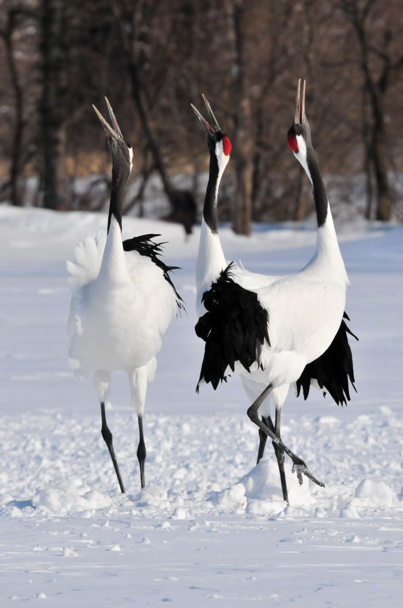

Kingdom: Amimalia
Phylum: Chordata
Class: Aves
Order: Gruiformes
Family: Gruidae
Genus: Grus
Species: G. japonensis
Bionomial name:
Grus japonensis

Adult red-crowned cranes are named for a patch of red bare skin on the crown, which becomes brighter during mating season. Overall, they are snow white in color with black on the wing secondaries, which can appear almost like a black tail when the birds are standing, but the real tail feathers are actually white. Males are black on the cheeks, throat, and neck, while females are pearly gray in these spots. The bill is olive green to greenish horn, the legs are slate to grayish black, and the iris is dark brown.